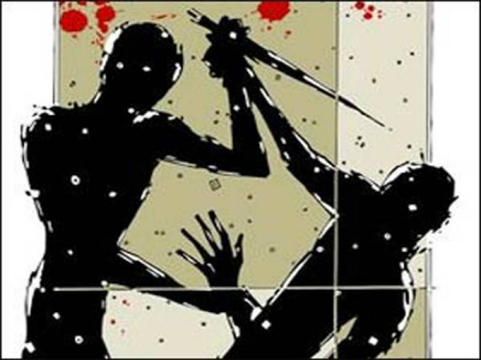
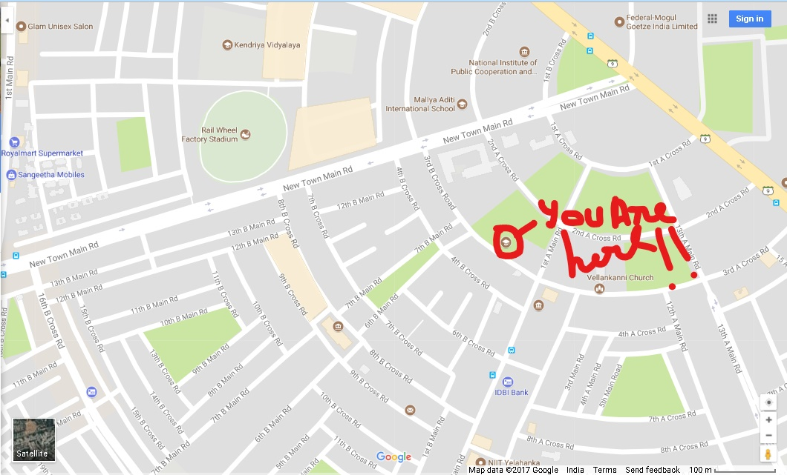

RIDDLE 2

NAME: Mr. Shiv Mehta
AGE: 50
REASON OF DEATH: Stabbed in heart
KILLER:Same man with Black clothes with the same body mass as the first murder (still mystery who ?)
EVIDENCE: Witnessed by another teacher and ready to identify in court. Knife was found with fingerprints.
INFORMATION: The victim is a teacher in this school. He was known for punishing children with brutal punishment. But wasn't able to be removed from the school.Murderer was seen with a big knife in his hand but the motive was unknown to the witness.
RIDDLE 3: " Answer me this question for you shall receive the name of the next place...
Why am I doing this?
A.) Doing this for fun
B.) Doing this for motive
Send me your answer to proceed !!

MARK URSELF FOR THERE IS NO TURNING BACK !